Conheça os renomados músicos do Brasil e do mundo, apresentando talento em gêneros como jazz, rock, blues e até mesmo gospel. Explore os detalhes
Galeria dos grandes Guitarristas Internacionais e do Brasil
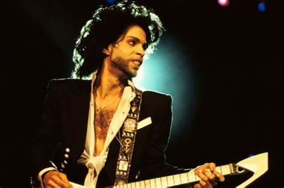
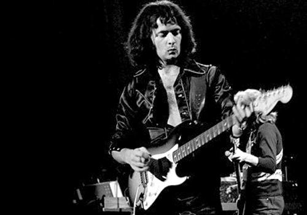
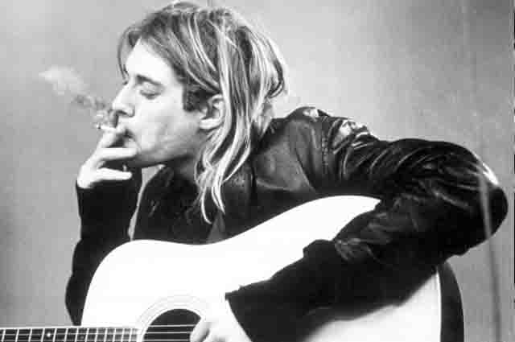

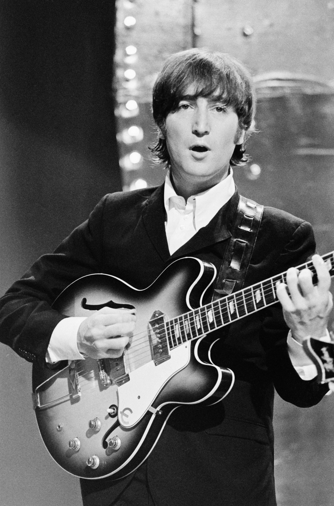

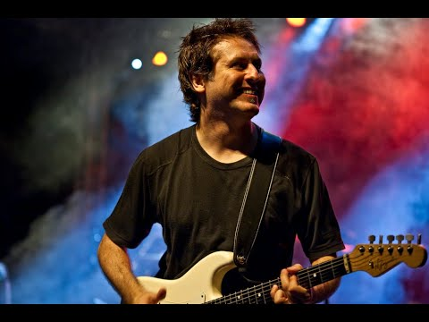
Galeria dos Grandes Bateristas Internacionais e Brasileiros
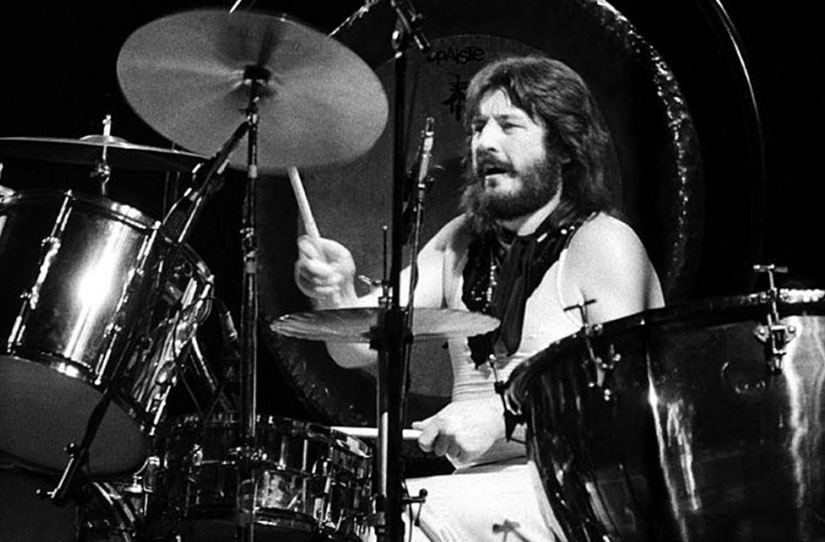
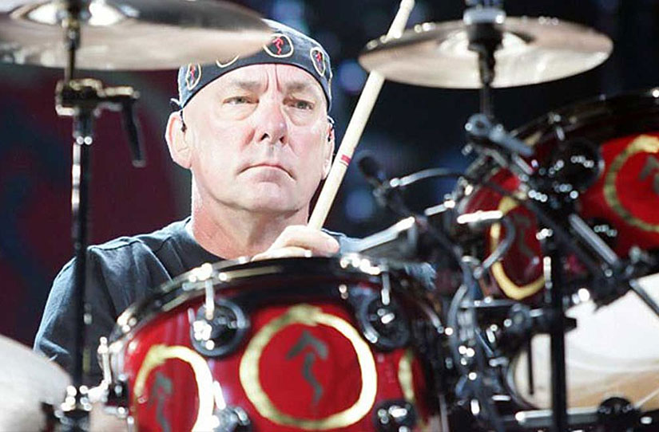
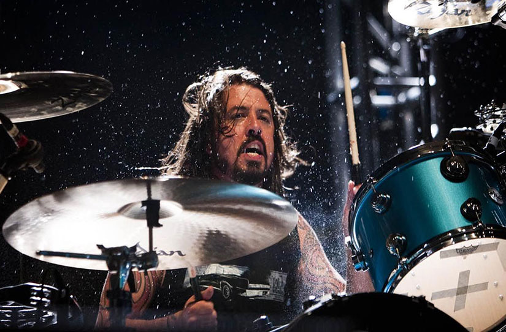
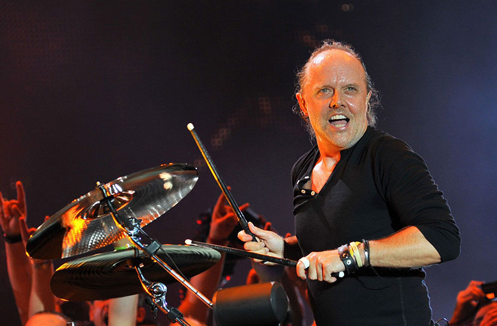
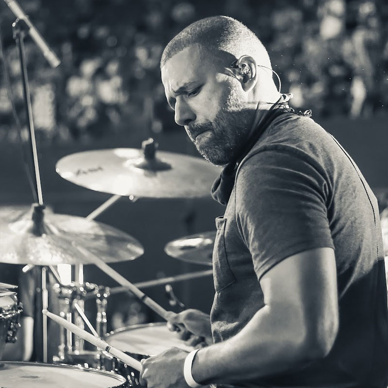
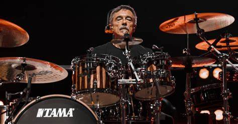
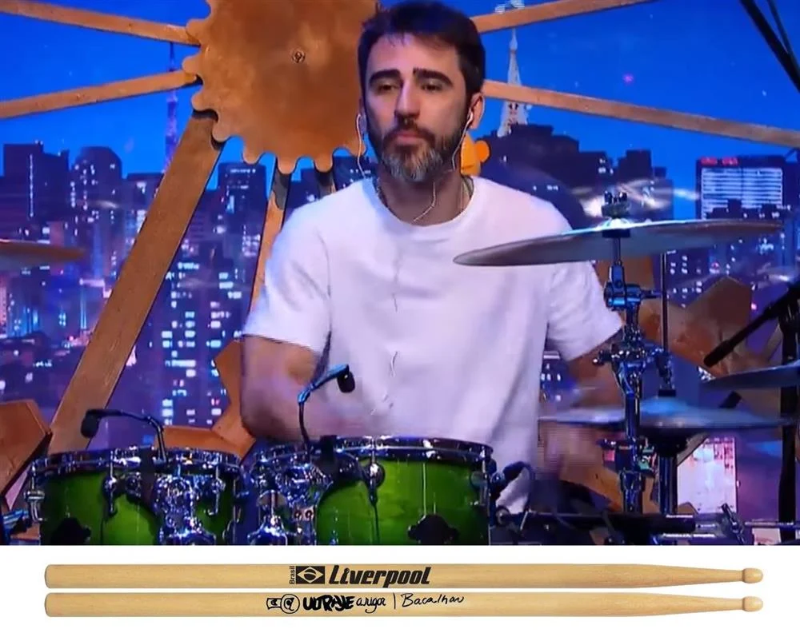
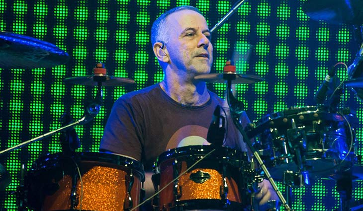